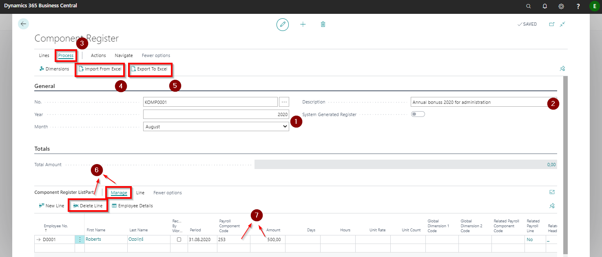
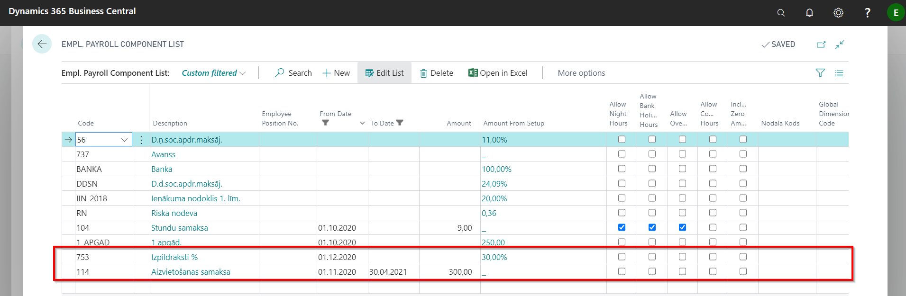

Benefits and deductions
Component Registers
The component register is intended to be use in cases where the employee has income or deductions that differ from month to month - are determined outside the program. When filling in the Component Register, all the mentioned salary components will be included in the monthly salary calculation indicated in the register title.
Creating a new register
A new registry is created on the home page or in the system search by selecting Component Registers and choosing New.
The number will be assigned to the register automatically. Next, select the Year and Month for which the benefits and deductions will be entered (when opening a new list, the current year and month will be entered automatically by default) ( ).
It is also recommended to fill in the Description field in free form, choosing the description, which is then easy to understand and after which it is easy to find the required entry - for example, by entering the department name or component type name, or a description of the employee group, etc. (
).
It is also recommended to fill in the Description field in free form, choosing the description, which is then easy to understand and after which it is easy to find the required entry - for example, by entering the department name or component type name, or a description of the employee group, etc. ( ).
).
The list of employees in the Component Register can be compiled in several variants - by automatically generating with filters by selecting employees and specifying a specific salary component code, and by selecting employees one by one. We recommend that you prepare the data in Excel using the export and import function in the toolbar by clicking on Process ( ) - Import From Excel (
) - Import From Excel ( ) or Export To Excel (
) or Export To Excel ( ).
).
If necessary, the generated or imported rows can be adjusted manually by deleting redundant employee( ) or by changing the Component Code () and/ or Value (). The period is entered automatically - the same as indicated on the card header. If the component relates to another Period (for example, income is adjusted), the value must be changed to the required one.
) or by changing the Component Code () and/ or Value (). The period is entered automatically - the same as indicated on the card header. If the component relates to another Period (for example, income is adjusted), the value must be changed to the required one.

Employee Card
It is recommended to enter in the Employee's card all the benefits and deductions, which are included in the calculation of monthly salary as constant amounts for a long period of time. In doing so, the employee will be automatically added registered benefit to the salary calculation each month and/ or the relevant deduction will be deducted.
It can be easily entered in the payroll component rows of employee card.
